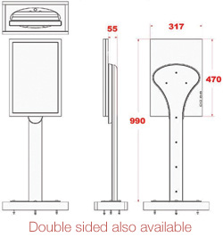

game displays
game displays
The display is a very versatile product, providing a wide range of media content in a stand-alone or networked format. Clear and dynamic graphics give an exciting feel to the display system, enhancing the gaming experience. Supplied with a 20inch screen with various standard templates available, the number of options are endless. In addition to the Roulette display there are a number of other games where displays can be used:
Blackjack
Poker
Baccarat
Brag
The package comprises of: 20" display & stand(s) / controller / standard software
The displays supply:
Min/max bet levels
Basic game rules
Media (look under Media Manager)
Progressive jackpots (from in venue jackpot system)
Specification:
Controller:
2Ghz processor
1GB RAM
PCI Card
40GB HDD
USB ports
RS232 ports
Ethernet
Parallel
Win XP Pro
Display:
Screen size 20 inches (viewable)
Screen type Thin film transistor (TFT) active-matrix liquid crystal display (AMLCD)
Resolution 1680 x 1050pixels (optimum resolution)
Display colours 16.7 million
Viewing angle 178 degrees horizontal; 178 degrees vertical
Brightness 300 cd/m2
Contrast ratio 700:1
Response time 14 ms
Pixel pitch 0.258 mm
Cables DVI (Digital Visual Interface), FireWire 400, USB 2.0 and DC power (24.5V)
Connectors Two-port, self-powered USB 2.0 hub, two FireWire 400 ports and Kensington security port
Other screen sizes available upon request.
Specification subject to change without notice